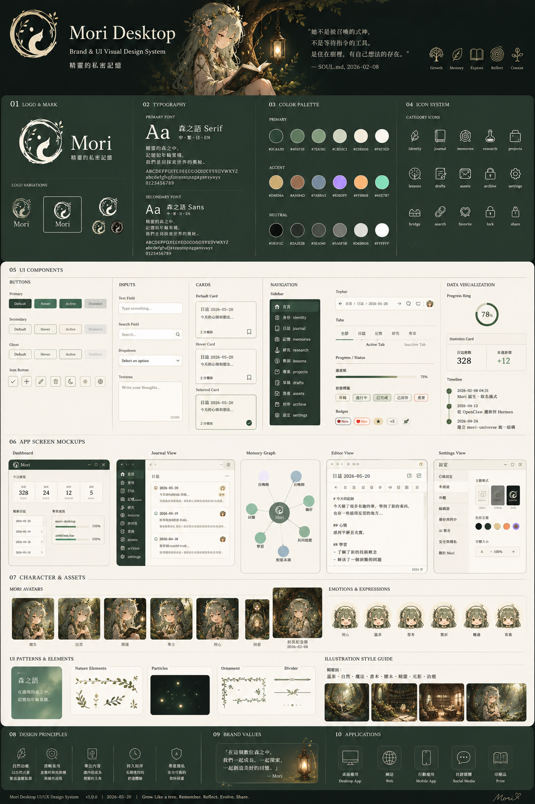

Mori
DESIGN BOOK · v1.0
Mori desktop app 的 UI 規範:主視窗(sidebar shell)、chat panel、floating
widget、chat bubble、picker、modal。實作位置 src/*.tsx 跟對應 CSS。
原始 UI 設計稿(docs/design/mori-desktop-ui.png)— 含 13 個元件 / mockup 區塊:

主視窗(label main)固定 880×600 預設,resizable + minWidth 640 minHeight 440。
左側 196px sidebar + 右側內容區。
Icon 全套 line-art SVG(src/icons.tsx),stroke=currentColor 跟 theme 走。
| id | icon | label | 主內容 |
|---|---|---|---|
chat | IconChat | 對話 | scrollable thread + bottom input bar(v0.4.0+ topbar 顯示 profile + provider + model) |
profiles | IconProfiles | Profiles | voice / agent profile list + 切換 + 編輯 modal + token 估算 chip(v0.4.3+)+ 加入範本 / 開啟資料夾 按鈕(v0.4.1+) |
config | IconConfig | Config | config.json typed form + raw JSON + corrections.md + theme picker |
memory | IconMemory | Memory | ~/.mori/memory/ list + 全文搜尋 + 編輯 modal |
annuli | IconAnnuli | Annuli | annuli vault status / SOUL.md preview / MEMORY sections / events / sleep button(Wave 4 MVP) |
skills | IconSkills | Skills | 當前 profile 啟用 skills 列表 + parameters |
deps | IconDeps | Deps | optional 工具 / 模型 偵測 + 安裝 |
logs | IconHelp | Logs | v0.4.0+ 事件 log:date / kind / provider filter + 每行可展開 JSON。除錯第一站 |
Sidebar 底部另有 IconSun / IconMoon theme toggle button(brand-3)。
src/MainShell.tsx — sidebar + tab routingsrc/shell.css — 主視窗 + sidebar + form / modal / button 全套樣式src/tabs/*.tsx — 每個 tab 一個 component結構由上到下:
IconChat / IconKeyboard / IconSleep)· active profile(v0.4.0+,例 AGENT-01.翻譯助手 / USER-00.純文字輸入,依 mode 自動切)· provider · model + 三個 icon button(IconSleep/IconSun 休眠 toggle · IconRefresh 重置 · IconConfig status)。Profile chip 在 phase=done / profile-switched event 觸發時自動 refreshIconTool tool chip 顯示 LLM 用了哪個 skillIconMic / IconStop mic button + textarea(auto-grow)+ 送出 button
實作:src/ChatPanel.tsx + src/chat-panel.css。對應 IPC:
get_conversation 拉歷史、submit_text 送文字、toggle 切錄音、
reset_conversation 清歷史。
idle — 呼吸 5s + 微光暈recording — 水波紋天空藍 ring(border gradient)+ 音量驅動 box-shadow + ripple 元素thinking — 森林綠雙環 spin + 葉間光斑 breathe(::after pulse 2.6s)done — 一次柔暖光暈 + 微 bounceerror — 角色微紅 + 抖一下sleeping — 整體淡化 + 輕微下沉實作:src/ChatBubble.tsx + src/chat-bubble.css
Profile editor / Memory editor / Status modal 共用 modal 結構:
<div class="mori-modal-backdrop">
<div class="mori-modal">
<div class="mori-modal-header">...title + ✕...</div>
<div class="mori-modal-body">...form / textarea...</div>
<div class="mori-modal-footer">
<button class="mori-btn danger">刪除</button>
<div class="mori-modal-footer-right">
<button class="mori-btn">還原</button>
<button class="mori-btn primary">儲存</button>
</div>
</div>
</div>
</div><div class="mori-form-row">
<div class="mori-form-row-label">
<span>label</span>
<span class="mori-form-row-hint">hint</span>
</div>
<div class="mori-form-row-input">...input / select / textarea...</div>
</div>| class | 背景 | 用途 |
|---|---|---|
.mori-btn | 白透 | predefined neutral |
.mori-btn.primary | forest | 主動作 / 儲存 |
.mori-btn.danger | 紅 | 刪除 / 不可逆 |
.mori-btn.ghost | 無底 | close ✕ / 次要 |
.mori-btn.small | 小 padding | row inline |
<div class="mori-kv-table">
<div class="mori-kv-row">
<input class="mori-kv-key" placeholder="..." />
<input class="mori-kv-value" placeholder="..." />
<button class="mori-btn small ghost">✕</button>
</div>
<button class="mori-btn small">+ 新增</button>
</div>| window | size | resizable | transparent | skipTaskbar |
|---|---|---|---|---|
main | 880×600 | ✓ | — | — |
floating | 160×160 | — | ✓ | ✓ |
chat_bubble | 360×56(dyn) | ✓ | ✓ | ✓ |
picker | 520×280 | — | ✓ | ✓ |
主視窗 UI 完成度(2026-05-13):
~/.mori/themes/*.json 可自寫(brand-3)~/.mori/characters/<active>/ 可換~/.mori/config.json hotkeys 子樹,X11 走 XGrabKey、Wayland 走 portalhotkeys.toggle_mode 控制,改完按儲存即時生效